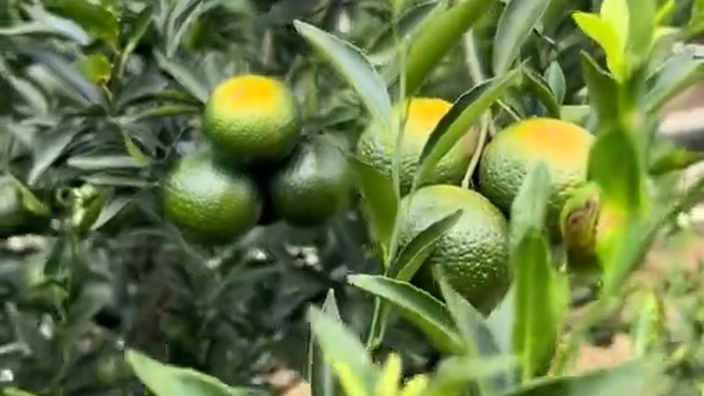
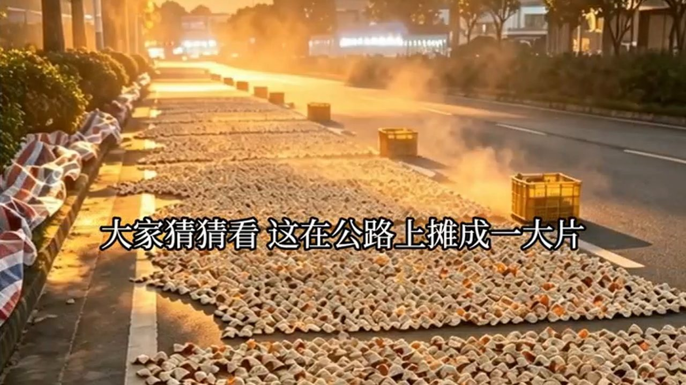
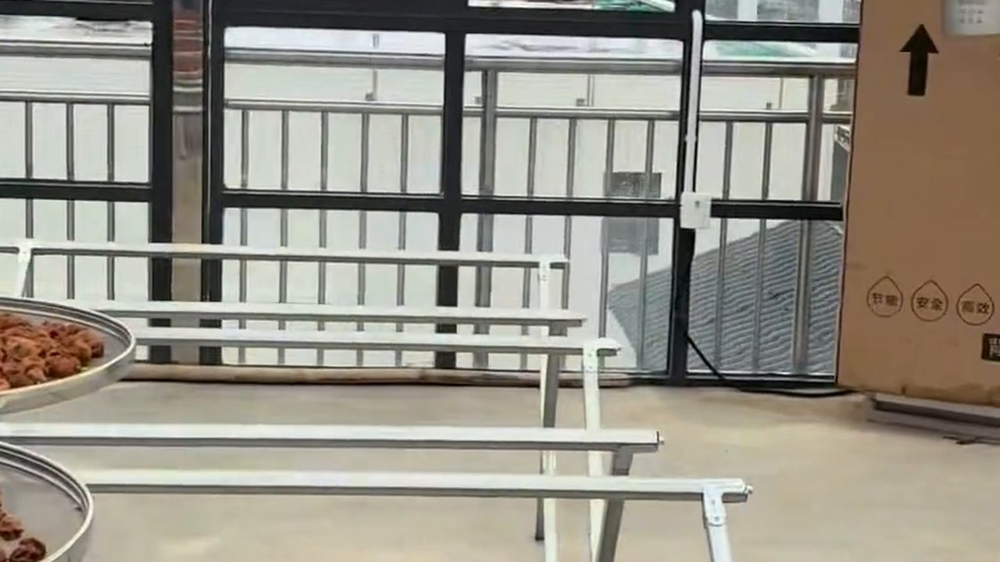

十月一到，新會柑園就開鐮了。
這一天，整個珠三角的阿叔阿姆都盯着這批「黃金果」。我在陳皮村廣場站了三個小時，看了一位柑農從進場到過磅的全過程。有些數字，看新聞看不出感覺，站在磅旁邊才看得出來。
一、開鐮：油室飽滿到發光的那一粒

天剛亮，霧還沒散。果農黃叔已經在樹下轉了三圈。他托起一粒茶枝柑，湊到我眼前：
「你睇下呢粒，油室飽滿到發光。核心產區嘅皮，摸落去係實嘅，唔係軟塌塌。」
十月開採的這一批，是青柑。同一棵樹，一年要收三批：青柑（約八九月至十月）、二紅（重陽後轉黃時）、大紅（冬至前後全紅時）。三批香氣、用途、價格都不一樣，青柑藥性偏「猛」，多數拿去做小青柑或入藥；大紅皮厚油室飽，是拿來陳化的主力。
很多人不知道的是，這片果園的底盤有多大：新會柑種植面積十四萬七千五百畝、年產量約二十八萬噸、全產業鏈總產值突破二百八十三億元（283 億），帶動超過十萬人增收。新會陳皮已經連續三年位居中國區域農業產業品牌影響力指數榜首。
二、陳皮村廣場：過磅的三個小時

上午九點，陳皮村廣場已經人山人海。手推車、三輪車、皮卡排成一條線，一筐筐青柑等着過磅。收購檔口的老闆娘隔着秤喊了一聲：
「黃叔，今年收成點啊？」
「差啲囉，唔好提了。天年唔似舊年，天旱到裂皮，收晒先知邊批着數。」
這一行的收成，從來不是「多與少」這麼簡單，而是大小年——去年掛果多，今年樹就歇一歇；再加上颱風、乾旱、雨水，同一片產區不同圍子的果，品質都能差出一截。所以有經驗的收購商不會只看產量，會看油室飽不飽、皮厚不厚。
黃叔的果子過了磅，總數比他預想的少。他沒多說什麼，只是把空筐收好，蹲在路邊抽了一支煙。
三、開皮三刀：開錯了，一張皮就廢了

果子當天就要開皮——晚一天，果就蔫了，皮就不香了。作坊裡，做了三十多年皮的陳師傅手起刀落，三刀下去，一張柑皮整整齊齊攤開，果肉完整地落在一旁。
「你知唔知點解要叫三刀法？呢個係祖傳手藝——皮嘅維管束唔傷，儲存過程先唔會發霉。一張好皮，開錯咗刀就廢咗。」
這道手藝有正式名字，叫三瓣開皮，寫在新會陳皮炮製技藝裡（二〇二一年列入第五批國家級非物質文化遺產代表性項目名錄，編號 Ⅸ-3）。整套工序的秘訣是一串「三」：三年育苗、三年掛果、三批採收、三個品種、三瓣開皮、三年曬皮、三級分皮、三年陳化、長久貯存。
開皮之後是反皮、翻皮、曬制。這一步靠天，也靠人——天要夠晴，人要夠勤。
四、同一片新會陳皮，為什麼有人賣九塊九，有人賣兩萬

下午回到店裡，一位客人拿着手機問我同樣的問題：「同一片新會，點解價錢差咁遠？」
這個問題有公開答案。江門市社科聯的調研把市場價格分了層：
· 三至五年的電商低價品：每斤約三十至二百元，普遍存在產地不明、混皮摻假；
· 五至十年的中端流通品：年份標註模糊，靠商家話術；
· 十年以上高端：高度依賴品牌溢價；十五年以上收藏級更是真偽難辨。
全區每斤售價從數十元到兩萬元以上，跨度極大。而消費者這邊：八成二分不清年份、七成五分不清產地、六成一只聽過圈枝與駁枝卻不會辨別。這就是「便宜」與「貴」同時存在的空間。
「咁我點知邊個係真？」
「唔好靠感覺，靠查得到嘅嘢——下面呢樣，就係今年新出嘅答案。」
五、六真標準：從「靠嘴皮子」到「靠數據」

過去證明陳皮的真偽，靠的是經驗、是靠嘴皮子。今年三月，新會陳皮的數據資產在深圳數據交易所掛牌上市——產業從「地理標誌」邁向「數據資產」：基於區塊鏈技術，陳皮從採摘、晾曬、陳化到流通的全流程數據上鏈存證，每一片皮都有一張不可篡改的「數字身份證」。
配套的就是「六真標準」：真源頭、真產地、真年份、真品種、真生態、真陳化。另外，二〇二六年三月十八日，五邑大學陳皮學院正式揭牌，研究的方向正是年份鑑定、無損檢測、活性成分提取這些硬骨頭。
「以前你買皮，要信我個人。而家你可以掃碼，睇佢邊條圍出、幾時開皮、入邊個倉。信人變成信數據，呢個先係長遠嘅事。」
行業的目標也寫下來了：全力護航產業邁向二〇三五年五百億產值。而在那之前，陳皮村這一年接待的遊客已經超過三百萬人次——很多人是來看曬皮的，走的時候帶走一片自己信得過的皮。
常見問題
十月開採的是什麼柑？青柑、二紅、大紅怎麼分？同一棵樹一年收三批：青柑約八九月至十月（皮青、藥性偏猛）、二紅在重陽後轉黃時（青黃相間、香氣轉甜）、大紅在冬至前後（全紅、皮厚油室飽，陳化主力）。
今年收成怎樣？價格會不會漲？新會柑存在明顯的大小年，加上颱風、乾旱等天氣變數，同一產區不同圍子的品質都能差一截。與其猜漲跌，不如看皮本身：油室飽不飽、皮厚不厚、足不足月。
「三刀法」為什麼重要？三刀開出三瓣，皮身完整、不傷油室與維管束，日後儲存才不易發霉。這是非遺工序「三瓣開皮」的核心，開錯了刀，一張皮基本就廢了。
為什麼同樣叫新會陳皮，價格從幾十元到兩萬元？三至五年的低價品普遍產地不明、混皮摻假；五至十年的年份標註模糊；十年以上高度依賴品牌溢價，十五年以上更是真偽難辨。價格跨度大，本質是「可驗證程度」的差距。
「六真標準」是什麼？跟溯源碼有什麼關係？六真指真源頭、真產地、真年份、真品種、真生態、真陳化。溯源碼是它的落地方式：掃碼可見產區、採收年份、開皮與入倉記錄，數據上鏈不可篡改。
消費者怎麼避免買到混皮摻假？三個動作：一問產區（能否具體到村、到圍）、二掃溯源碼（能否對上採收年份）、三看內囊（自然陳化的內囊疏鬆、有雪花狀風化痕跡；做舊的僵硬結塊、輕刮掉渣）。
結語：陳皮是時間，你騙不到人
天快黑了，曬場上開始收皮。黃叔把最後一筐果子推上車，回頭跟我說了一句話：
「靚嘅皮，有錢都未必賣俾你——留俾自己個孫。陳皮係時間，你呃唔到人。」
這一天的三個小時，我學到最實在的一件事是：開採只是起點。從枝頭到過磅，從三刀開皮到翻曬入倉，每一步都會在三年、十年後被喝出來。新會陳皮這二百八十三億的產業，說到底還是靠一棵棵樹、一雙雙手慢慢堆起來的。
想看果園這一季的實拍，看這篇《溯源區的柑園：一棵柑樹要長三年才結果》；想看一片皮從果園到櫃檯要經過幾個人的手，翻翻這篇《一片新會陳皮的江湖》。
下期預告：過磅之後，果從哪裡來、皮往哪裡去？我跟了一天收購車，發現同一天同一片產區，兩筐果的收購價差了將近一倍——差在哪裡，下期講給你聽。